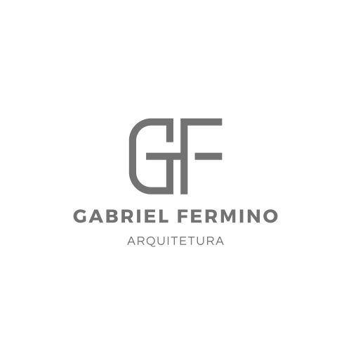

GABRIEL FERMINO · ARQUITETURA
Luciana & Luciano
Um percurso pelo hall, estar, jantar e cozinha.Explore o projeto no seu ritmo.
Preparando a visita…
Arraste para olhar · W A S D ou setas para caminhar
À SUA MANEIRA
No computadorArraste para olhar. Use W A S D ou as setas para caminhar. Shift acelera o passo.
No celular ou tabletArraste no ambiente para olhar. Use o controle circular para caminhar.
Os botões dos ambientes e as setas dos pontos de visita levam você às 10 posições marcadas na planta. Em Visão geral, arraste para girar e use dois dedos para aproximar.